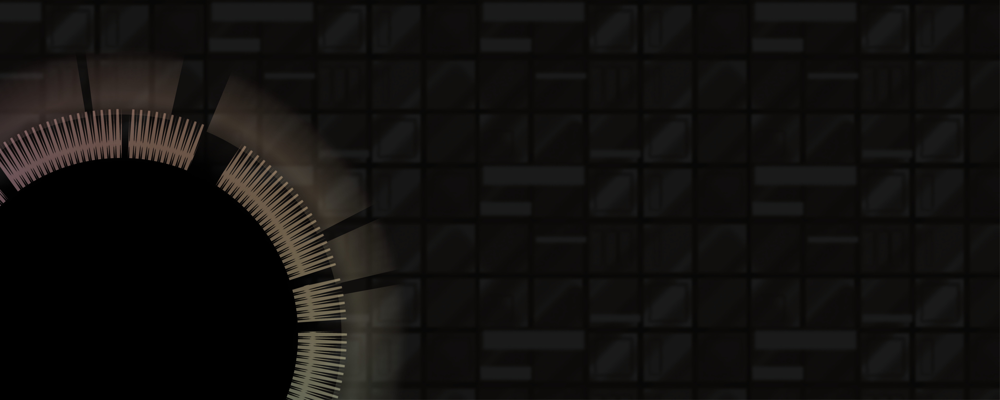

Long-Term Trends in the Public Perception of Artificial Intelligence
DATA VISUALIZATION / PERSONAL PROJECT / 2022
This is a data visualization project, explaining the trends in public opinions, which had long been focus on the development of Artificial Intellegence.
Watch animation output on Youtube
A data research report analyzed all the content related to AI in the New York Times over the past decades and counted the data of different fields, relevance, and attitudes.
After reading the report, I extracted and collated these data and made several information charts based on them to intuitively see how the public (media) attitude changes.
The power of AI is obvious to all. Who knows when they will suddenly lose
their jobs because of AI? And who is expecting AI to make life better?
In any case, it is essential to pay attention.


Articles published by the New York Times between January 1986 and May 2016—more than 3 million articles in total. more than 8000 paragraphs that mention AI over a thirty year period in total. Researchers evaluate the mood level of each article with a 5-point Likert scale, and record the data in the dataset.
Posters in display
Data of reviews from different sections on the N.Y.T.
 Data of reviews from different keyword indicators.
Data of reviews from different keyword indicators.

The attitude of perception of the public has always been an interesting and
valuable topic, both for researchers and viewers (even for the bystanders).
Researchers can study on culture, society, media, and philosophy from the data, for
topics such as what kind of events can affect people's attitudes towards what
emotional direction. Observers can use the information to make business forecasts.
And people who watch the activity can better understand themselves or just enjoy
the happiness from empathy.


Lumen Residents
INFORMATION DESIGN / PERSONAL PROJECT / 2021

A project of the visualization of the light environment in the cityof Shanghai, which contains a series of multiple-layer maps and aguidance book as a reference.
 In 2050, Shanghai has become the largest city in east Asia,attracting hundreds of millions of foreigner to live in the city.They need to either buy new house or rent old house to live in.Under such circumstance,the light environment, as one of themost important aspect in evaluating living condition, shall have aclear and direct way to be presented to these people.
In 2050, Shanghai has become the largest city in east Asia,attracting hundreds of millions of foreigner to live in the city.They need to either buy new house or rent old house to live in.Under such circumstance,the light environment, as one of themost important aspect in evaluating living condition, shall have aclear and direct way to be presented to these people.
 Following the light regulation guidebooks, I design these visualization concept in a booklet for foreigners to check out different light environments in the city.
Following the light regulation guidebooks, I design these visualization concept in a booklet for foreigners to check out different light environments in the city.
 The booklet categorizes the information by places. In addition, I also designed a series of maps to show information by different time periods in a day.
The booklet categorizes the information by places. In addition, I also designed a series of maps to show information by different time periods in a day.


C`EST LES MEDIAS: Set Fire to the Internet
BOARD GAME / COOPERATOR: DESIGNER WEITIAN DUAN / 2022

This is a project of a strategy card game, in which the player willenjoy a wonderful experience of manipulating public opinions and win supports from the people.
l designed this game in order to study the media theory, of howthe medium and netizens raise public opinions, and inspire fur-ther thoughts on the new problems we are facing towards newmedias on the Internet.
 My idea came from my study on communication theory, a course l took incollege.And l want to tell a story about the media.
After learning more of the people, the group and the mass media, l found itreallyinteresting that, the way the group of people form their opinions, the waythe leaderhaving influence and the medium platform.People live in the
information environment composed of various mediums.They have a greatinfluence on people, but little attention is paid to them.
lt is always the case that, the public opinion is influenced by many forces.Therefore, in order to recall the thinking of the public, my friend and ldesignedthis card game to get the useful knowledge over to them.
My idea came from my study on communication theory, a course l took incollege.And l want to tell a story about the media.
After learning more of the people, the group and the mass media, l found itreallyinteresting that, the way the group of people form their opinions, the waythe leaderhaving influence and the medium platform.People live in the
information environment composed of various mediums.They have a greatinfluence on people, but little attention is paid to them.
lt is always the case that, the public opinion is influenced by many forces.Therefore, in order to recall the thinking of the public, my friend and ldesignedthis card game to get the useful knowledge over to them.


Book Design: Arranging Knowledge
PRINTINGS / PERSONAL PROJECT / 2023

ln this project, l redesigned the book"The Art of Game
Design" to better its reading experience, and to make it betterunderstood by readers.Based on my interview and research, lfound the design defects of this book and improved them,and finally achieved the balance of functionality, beauty andrich knowledge content.
 As someone who is always interested in game, l have experienced theuniqueness of design and aesthetics in games, and l have some
understanding of game design of my own.Therefore, l want this bookto be more than just a guide book, to have the aesthetic feeling of thegood games. When reading or referring this book, I hope the designerscan feel that they are doing a special and meaningful work.
As someone who is always interested in game, l have experienced theuniqueness of design and aesthetics in games, and l have some
understanding of game design of my own.Therefore, l want this bookto be more than just a guide book, to have the aesthetic feeling of thegood games. When reading or referring this book, I hope the designerscan feel that they are doing a special and meaningful work.
 To truly understand game design, designersmust understand a complex network composed of creativity, psychology, art, technology andbusiness,and gradually establish a complex relationship system between designers, players,games, teams and customers in mind.
To truly understand game design, designersmust understand a complex network composed of creativity, psychology, art, technology andbusiness,and gradually establish a complex relationship system between designers, players,games, teams and customers in mind.

 *part of the illustrations were produced by Midjourney.
*part of the illustrations were produced by Midjourney.